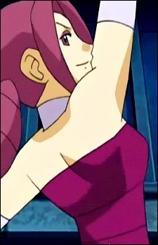
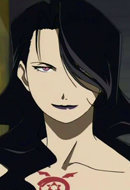
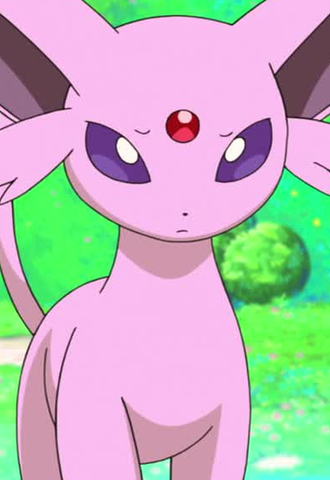
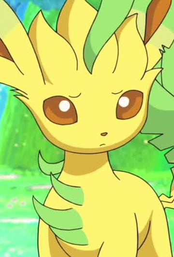
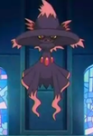
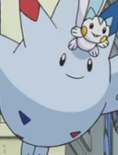

|
Chika Hatori |
- The Ancient Magus' Bride: Those Awaiting a Star
- The Ancient Magus' Bride
|
Chika Hatori was the mother of Chise Hatori. Chika was a kind, loving and soft-spoken mother. She tired to protect her daughter from the creatures. |
|  |
Fantina |
- Pokemon Diamond and Pearl
|
Fantina is the gym leader of Hearthome City's Gym and a Top Pokemon Coordinator. She specializes in Ghost-type Pokemon. She has a flamboyant personality and speaks in french phrase. |
|  |
Lust |
- Fullmetal Alchemist: Brotherhood
- Fullmetal Alchemist: Brotherhood - 4-Koma Theater
|
Lust is a Homunculus created by father. She is high intelligent and mildly flirtatious. She embodies father's lust. She partnered with Gluttony to whom have a motherly connection too. Lust acts calm and confident. |
 |
Nurse Joy |
- Pokemon Diamond and Pearl
- Pokemon Diamond and Pearl Specials
|
Nurse is a recurring character in every Pokemon series. Their are multiple Nurse Joys in every region. She enjoys the work of medicine and loves Pokemon. She is extremely patient and caring Nurse Joy is head of Pokemon Center. |
|  |
Espeon |
- Pokemon: Eevee and Friends
|
Espeon is a Pokemon from Johto region. Espeon is one of the Eevee evolve forms. The gem on Espeon's head boosts it's psychic powers to protects it's trainers. |
|  |
Leafeon |
- Pokemon: Eevees and Friends
|
Leafeon is a Pokemon from Sinnoh region. Leafeon is an evolved of Eevee. This pokemon can perform photosynthesis while it's sleeping under sunshine. |
|  |
Mismagius |
- Pokemon Movie 13: Zoroark The Master of Illusions
|
Mismagius is a Pokemon from the Sinnoh region. It is the evolved form of Misdreavus. People that near it s cries will usually receive headaches and halluciantions. Kikuko Inoue voiced Fantina's Mismagius. |
|  |
Togekiss |
- Pokemon Diamond and Pearl
|
Togekiss is a Pokemon from the Sinnoh region. It is the final form of Togepi. When it is seen or visits respectful people, it showers gifts of blessing and kindness. Kikuko Inoue voiced Dawn's Togekiss. |